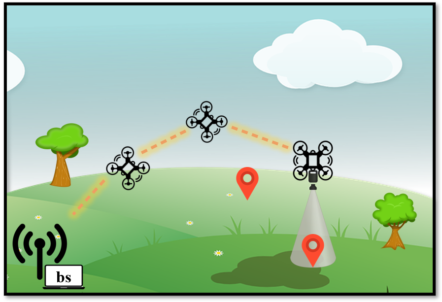

17 July 2022

Many safety critical scenarios, including post-disaster areas, or military fields, require prompt area monitoring and fast detection of events of interest.
Flying Ad-hoc Networks (FANETs) provide a powerful tool to search the area, locate anomalies and transmit them to the edge-server.
Collected data and anomalies can be processed with modern Deep Learning algorithms, to better classify ongoing events and identify possible threats.
Nevertheless, wide-area deployment of FANETs poses a number of challenges.
Existing long range communication technologies could be inadequate to meet the data rate and delay requirements of a safety critical application.
To face this challenge, we formulate a novel edge offloading problem, where we require the FANET to create connected formations to
ensure multi-hop low-latency communications while considering the special Deep Learning application requirements.